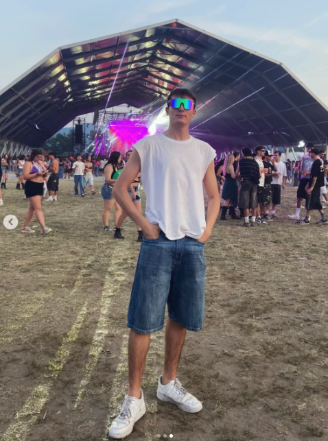

2026
IO SONO
GHIZZO LIVE LIVE
GHIZZO LIVE LIVE
NUOVO ALBUM · LIVE
5 tracce registrate dal vivo. Una notte sola. Fuori a mezzanotte.
Uscita: 6 giugno 2026, 00:00 (ora italiana)
Clicca un brano per leggere il testo e aprirlo su Suno
Il videoclip ufficiale di «Io Sono Ghizzo» e i contenuti dietro le quinte
IN ARRIVO
Il video sarà pubblicato qui appena disponibile.
Resta sintonizzato.
Tutti gli album di Ghizzo
Le voci della critica su Ghizzo

Mi chiamano Ghizzo. Vengo da Senago, hinterland di Milano, e sono nato nel 2003.
Di giorno sto in azienda di famiglia e mi alleno col pallone in mano — il basket è la prima cosa che mi ha insegnato a perdere bene e a rialzarmi meglio. Di notte invece accendo la città: ho fondato Mirko Party Events, l'organizzazione con cui produciamo eventi privati in Lombardia da qualche anno.
La musica è arrivata dopo, come un riflesso di tutto il resto. Nel febbraio del 2025 è uscito "Ghizzo Fluo", il mio primo album: quattro pezzi nati tra parcheggi vuoti, palestre e dopo-festa. A giugno 2026 esce "Io Sono Ghizzo Live", quattro brani inediti registrati dal vivo più la versione live di Tra Due Luci: la stessa energia delle notti di Senago, ma con la voce della gente sopra.
A settembre 2026 parto in tour nei principali palazzetti italiani. Se ci sei, ci sei davvero.
Biglietti disponibili a breve · ogni concerto è un pezzo del disco che cambia forma.
Lascia un messaggio. Tutti lo vedranno. Stay fluo.
Caricamento muro…
TESTO
ASCOLTA SU SUNO ↗